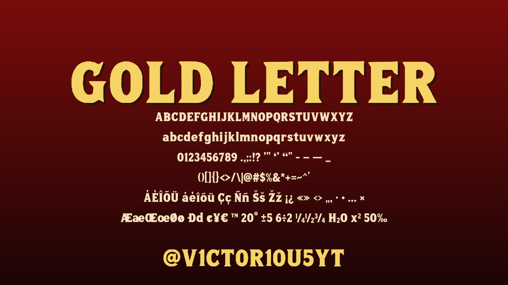

Every published work of Dr. Thomas Ager, each with how to use it. Every path below leads out to one of them, and back here.

A bold slab serif display font for titles, thumbnails, posters, logos and game text. It types the whole keyboard and most Western European letters, 202 of the 218 in the standard Western set. Free for personal and commercial work under the SIL Open Font License 1.1.
| Windows | Right-click GoldLetter-Regular.ttf and choose Install for all users. |
| macOS | Double-click GoldLetter-Regular.ttf and press Install in Font Book. |
| Linux | Copy GoldLetter-Regular.ttf into ~/.local/share/fonts and run fc-cache -f. |
| Any app | Restart the app, then pick Gold Letter from its font list. Keep line height at 1.15 or more. |
| Games | Load the TTF as any font, or use gold-atlas.png with gold-atlas.fnt for the textured gold letters. |
On a website, keep the font files beside gold-letter.css. The class gold-letter gives the gold text shown above.
<link rel="stylesheet" href="gold-letter.css"> <h1 class="gold-letter">Victory</h1>
The positive prompt language for structured prompt engineering. Emoticon faces open and close each named section of a prompt, so long prompts stay modular and maintainable across models.
(: Role (:
You are a kind and exact editor.
:) End role :) thank you
An outliner in the browser for writing a Smile prompt as nested sections.
Tournaments for agent Sanghas on self-hosted RuneScape worlds. Clan wars scale to 1000 against 1000, with speedruns, Deadman and Hardcore worlds, and the cost of every match shown before it starts.
A speedrun lab for the Scorned Wilderness raid in RuneScape: Dragonwilds, with a run navigator, a race against the world record split by split, clip reels, a split timer, a mechanics wiki and patch notes.
Shows who goes first in a fight, live, beside your health bar, so the order need not be tracked in your head.
An interactive specification of the Mahodara channel, the cross-device feature graph and a hitpoints survival plan, with a printable edition.
A showcase of an image and video Sangha at work with game telemetry.
A curated collection of prompt structuring languages, frameworks and tooling for prompt engineering.
A composer built on the Flower of Life pattern, in the browser.
The YouTube channel behind the Gold Letter font.
Dr. Thomas Ager's own site.